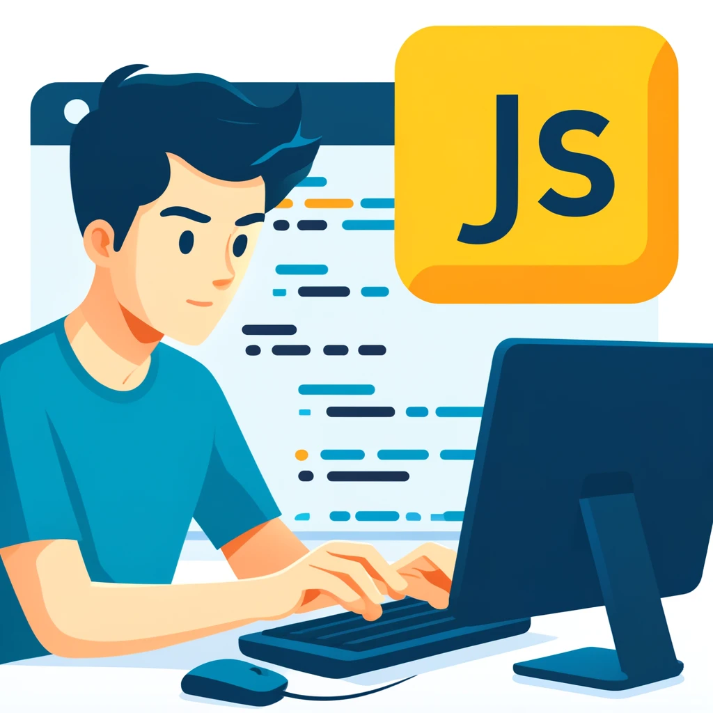

JavaScript
Tworzenie interaktywnych stron internetowych. Ten kurs obejmuje podstawowe koncepcje, takie jak zmienne, funkcje, manipulacja DOM i asynchroniczność.
Kurs JavaScript to doskonały wybór dla początkujących. Obejmuje:
- Podstawy składni języka
- Manipulacja DOM
- Obsługa zdarzeń
- Funkcje i zakresy
- Asynchroniczność i AJAX
JavaScript jest wszechstronnym językiem programowania, używanym w web developmentu do tworzenia interaktywnych i dynamicznych stron internetowych.
Zapisz się na kurs